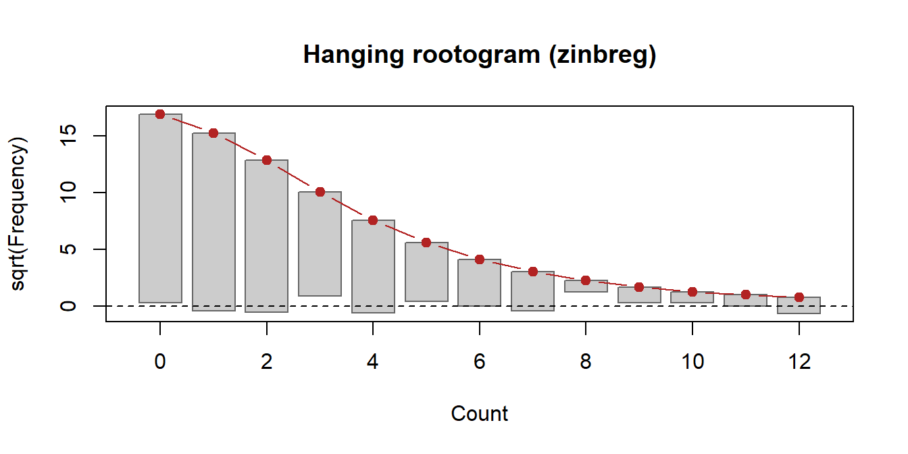

# install.packages("devtools")
devtools::install_github("jaxsonbugg/nbzinbreg")This guide walks through the package with a small, real data set. Every output below is produced by the installed package when this page is built.
Installation
The data
The examples use bioChemists from the pscl package: the number of articles (art) published by 915 biochemistry PhD students in the last three years of their PhD, with gender (fem), marital status (mar), the number of children under 6 (kid5), the prestige of the PhD programme (phd) and the number of articles by the student’s mentor (ment).
data("bioChemists", package = "pscl")
c(mean = mean(bioChemists$art), variance = var(bioChemists$art),
zeros = mean(bioChemists$art == 0)) mean variance zeros
1.6928962 3.7097416 0.3005464 The variance is more than twice the mean (overdispersion), which a Poisson model cannot describe.
Negative binomial regression
nbreg() takes a formula and a data frame, like glm(). The coefficients are on the log scale of the expected count; theta is the dispersion parameter, with variance .
Call:
nbreg(formula = art ~ fem + mar + kid5 + phd + ment, data = bioChemists)
Pearson residuals:
Min 1Q Median 3Q Max
-1.2677 -0.8754 -0.2613 0.4983 6.6573
Coefficients:
Estimate Std. Error z value Pr(>|z|)
(Intercept) 0.256144 0.137348 1.865 0.062191 .
femWomen -0.216418 0.072636 -2.979 0.002887 **
marMarried 0.150489 0.082097 1.833 0.066791 .
kid5 -0.176415 0.052813 -3.340 0.000837 ***
phd 0.015271 0.035873 0.426 0.670326
ment 0.029082 0.003214 9.048 < 2e-16 ***
---
Signif. codes: 0 '***' 0.001 '**' 0.01 '*' 0.05 '.' 0.1 ' ' 1
Theta: 2.264 (SE 0.2712)
Log-likelihood: -1560.96 on 7 df
AIC: 3135.92; BIC: 3169.65
Observations: 915; residual df: 909
Outer passes: 4; converged: yesexp(coef(fit_nb)) gives incidence rate ratios: the factor by which the expected count changes per unit of a covariate.
Zero-inflated negative binomial regression
zinbreg() adds a second, logistic model for the probability of a structural zero (a student who would publish nothing in any case). The formula has two parts: count covariates before |, zero covariates after. Without |, both parts use the same covariates.
Call:
zinbreg(formula = art ~ fem + mar + kid5 + phd + ment | ment,
data = bioChemists)
Pearson residuals:
Min 1Q Median 3Q Max
-1.3041 -0.7685 -0.2632 0.4671 6.3765
Count model coefficients (negative binomial with log link):
Estimate Std. Error z value Pr(>|z|)
(Intercept) 0.404007 0.141715 2.851 0.00436 **
femWomen -0.211906 0.071922 -2.946 0.00322 **
marMarried 0.139462 0.081192 1.718 0.08586 .
kid5 -0.167624 0.052457 -3.195 0.00140 **
phd 0.001963 0.035586 0.055 0.95602
ment 0.024393 0.003518 6.934 4.08e-12 ***
Log(theta) 1.002896 0.142830 7.022 2.19e-12 ***
---
Signif. codes: 0 '***' 0.001 '**' 0.01 '*' 0.05 '.' 0.1 ' ' 1
Zero-inflation model coefficients (binomial with logit link):
Estimate Std. Error z value Pr(>|z|)
(Intercept) -0.8067 0.3532 -2.284 0.0224 *
ment -0.6095 0.2458 -2.480 0.0131 *
---
Signif. codes: 0 '***' 0.001 '**' 0.01 '*' 0.05 '.' 0.1 ' ' 1
Theta: 2.726 (SE 0.3894)
Log-likelihood: -1553.27 on 9 df
AIC: 3124.54; BIC: 3167.91
Observations: 915; residual df: 906
EM iterations: 126; converged: yes
Gradient check: Newton decrement 9.35e-09 (grad_tol 1e-08)
Starting values: count part from negative binomial fit; zero part from logistic fit of I(y == 0)The summary also reports how the fit converged: the number of EM iterations and the gradient check at the estimates.
Comparing the models
logLik() carries the number of parameters, so AIC() and BIC() work directly.
AIC_nb AIC_zinb BIC_nb BIC_zinb
3135.917 3124.542 3169.649 3167.913 overdispersion_test() tests the Poisson model against NB, and vuong_test() compares the ZINB and NB fits. Because NB is the boundary of ZINB, the Vuong statistics are descriptive; vuong_test(B = 199) adds a parametric bootstrap test (it refits both models for every replicate, so it takes a while).
overdispersion_test(fit_nb)
Likelihood-ratio test for overdispersion (Poisson against negative
binomial; boundary-corrected p-value)
data: art ~ fem + mar + kid5 + phd + ment
LR = 180.2, p-value < 2.2e-16
alternative hypothesis: true theta is less than Inf
sample estimates:
theta
2.264388
vuong_test(fit_zi, fit_nb)
Vuong comparison: model 1 (zinbreg) vs model 2 (nbreg), N = 915
z statistic Favours p-value
Raw 1.8805 model 1 0.03002
AIC-corrected 1.3912 model 1 0.08208
BIC-corrected 0.2124 model 1 0.41590
Note: the NB model is the boundary pi = 0 of the zero-inflated model, so the
Vuong test is not a valid test of zero inflation; the statistics are descriptive.Predictions
predict() gives the expected count, and for ZINB also the count-part mean, the probability of a structural zero, or the probability of each count. It accepts newdata, and se.fit = TRUE adds delta-method standard errors.
new <- data.frame(fem = c("Men", "Women"), mar = "Married", kid5 = 0,
phd = 3, ment = 10)
predict(fit_zi, newdata = new, type = "response") 1 2
2.208425 1.786705
predict(fit_zi, newdata = new, type = "zero") 1 2
0.001005186 0.001005186 0 1 2 3
1 0.199 0.242 0.202 0.142
2 0.254 0.273 0.201 0.126Confidence intervals
confint() gives Wald intervals for the coefficients and a profile-likelihood interval for theta.
confint(fit_nb) 2.5 % 97.5 %
(Intercept) -0.01305 0.52534
femWomen -0.35878 -0.07405
marMarried -0.01042 0.31140
kid5 -0.27993 -0.07290
phd -0.05504 0.08558
ment 0.02278 0.03538
theta 1.80734 2.89853Diagnostics
expected_counts() compares observed and expected frequencies of each count, and rootogram() draws them as a hanging rootogram: bars that end below the dashed line are counts the model under-predicts.
head(expected_counts(fit_zi), 5) count observed expected
1 0 275 286.38330
2 1 246 233.06538
3 2 178 165.24942
4 3 84 101.24471
5 4 67 57.74262
rootogram(fit_zi, max_count = 12)
Control settings
nbreg_control() and zinbreg_control() set tolerances and iteration limits, and trace = TRUE prints the progress of the fit. For ZINB, hessian = "numeric" uses a numerical Hessian for the standard errors instead of the analytic one.
Tidy summaries
tidy() and glance() return the coefficient table and the model summary as data frames.
term component estimate std.error statistic p.value
1 (Intercept) count 0.4040069 0.14171517 2.850837 0.004360426
2 femWomen count -0.2119064 0.07192227 -2.946326 0.003215732
3 marMarried count 0.1394620 0.08119249 1.717671 0.085856667
4 kid5 count -0.1676240 0.05245733 -3.195436 0.001396197
glance(fit_zi) logLik AIC BIC theta SE.theta nobs df df.residual iter
1 -1553.271 3124.542 3167.913 2.726166 0.389377 915 9 906 126
converged newton_decrement
1 TRUE 9.354037e-09